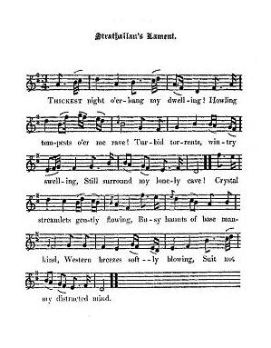

Strathallan's Lament
Complainte de Strathallan
Text by Robert Burns
Tune - Mélodie"Strathallan's Lament" by Allan Masterton
Source: Scots Musical Museum Vol. II Song 132 page 138
and Hogg's "Jacobite Relics" 2nd Series Appendix Part I - N°17 (who dubbs it "modern")
Sequenced by Ch.Souchon

|
To the tune: Robert Burns's Jacobitism:
William Drumond, 4th Viscount of Strathallan , was killed at Culloden. His name and that of his eldest son, James, were included in the Bill of Attainder passed in 1746. Burns's 'Strathallan's Lament' is probably put into the mouth of the son James, fifth Viscount Strathallan, who died in France in 1765 (Ritson in his "Scotish Songs II", 1794, states "He escaped to France and is still living). The words of this song were written by Robert Burns, as stated by the remark 'B':to the Tune, "Strathallan's lament" . Whilst such information provided in the 'Museum' is not always reliable, in this instance it has been verified by external sources (the MS is in the British Museum). Burns passed through Strathallan on 28thAugust 1787; shortly afterwards he wrote the song. According to Burns's notes on the 'Interleaved Museum': "This air is the composition of one of the worthiest and best hearted men living - Allan Masterton , school master in Edin[bu]r[gh]. As he and I were both sprouts of Jacobitism, we agreed to dedicate the words and air to that cause. To tell the matter of fact, except when my passions were heated by some accidental cause, MY JACOBITISM WAS MERELY BY WAY OF 'VIVE LA BAGATELLE'." This appears to be a rather dubious assertion,or the "accidental causes" were very frequent indeed. He never cared to write anything on the Hanover family to show that he adhered to it. In this poem, as in many other Jacobite songs, Burns is indignant against the enemies of the Jacobites, in spite of all his democratic feelings. Like many a Scot in his day, he did not accept the Union as favourable to his country whose pride rebelled against occupying an inferior position. This feeling was embodied in all the Jacobite songs he wrote. On the other hand, as an excise officer he was anxious not to imperil his main income source. Therefore a great many of these subversive songs were not acknowledged, or when they were, like here, accompanied by apologies for writing up the Jacobite cause. Another MS. of the song differs from that in the text. The first line is 'Thickest darkness o'erhang my dwelling,' and the first half of the second stanza is as follows:— ' Farewell fleeting, fickle treasure, Between mishap and folly shar'd; Farewell peace and farewell pleasure, Farewell flattering man's regard.' Besides, this song has a striking family likeness with "Blow ye bleak Winds" in the True Loyalist , albeit in a different tone (a melancholy lament, instead of a vindictive call to revenge). Main Source "The Fiddler's Companion" (cf. Links). |
A propos de la mélodie: le Jacobitisme de Robert Burns
William Drumond, 4ème Vicomte de Strathallan , fut tué à Culloden. Son nom ainsi que celui de son fils aîné, James, fut inscrit dans l'Acte de destitution de 1746. Burns met probablement cette 'Complainte de Strathallan' dans la bouche de son fils James, 5ème Vicomte de Strathallan, qui mourut en France en 1765 (Ritson dans ses "Scotish songs II", 1794, écrit: "Il partit pour la France et est toujours vivant"). Les paroles de ce chant sont dues à Robert Burns comme l'indique la mention "B : sur l'air 'Complainte de Strathallan'" . Alors que cette information lorsque elle est donnée dans le "Musée", n'est pas toujours fiable, en l'occurence, elle est recoupée par d'autres sources (le manuscrit est au British Museum). Burns passa à Strathallan le 28 août 1787 et composa le chant peu après. Selon les notes de Burns dans le "Musée interfolié": "Cet air est de l'un de nos contemporains les plus dignes et les plus généreux qui soient, Allan Masterton , maître d'école à Edimbourg. Rejetons, l'un et l'autre, du Jacobitisme, nous décidâmes de consacrer cet air et ces paroles à la cause. A dire vrai, hormis les cas où quelque incident enflamma mes passions, MON JACOBITISME A TOUJOURS ETE DU GENRE 'VIVE LA BAGATELLE'." Il est permis d'en douter ou de penser que les "incidents" étaient étrangement fréquents et l'on ne connaît aucun écrit de sa main où il exprime la moindre sympathie pour la maison de Hanovre. Dans ce poème, comme dans bien d'autres chants de ce type, Burns s'emporte contre les ennemis des Jacobites, malgré son attachement à la démocratie. Comme bon nombre d'Ecossais, il ne pouvait considérer l'Union comme favorable à sa patrie dont la fierté était blessée par la situation d'infériorité où elle était reléguée. C'est un sentiment qui s'exprime dans tous ses chants jacobites. Cependant, en tant qu'agent de l'accise, il tenait à ne pas compromettre sa source principale de revenus. C'est pourquoi l'écrasante majorité de ses chants subversifs ne sont pas revendiqués, ou alors, comme c'est le cas ici, accompagnés d'excuses pour cette apologie de la "Cause". Un autre manuscrit du chant présente quelques différences par rapport au texte du "Musée". A la première ligne, on lit: "La plus profonde obscurité recouvre ma demeure" et la strophe 3 est la suivante: 'Adieu vains trésors inutiles Où s'acharnent folie, malheur! Adieu paix, et plaisirs futiles Adieu, courbettes des flatteurs. En outre, ce chant en rappelle étrangement un autre: "Bise soufflant à mes oreilles" du Vrai Loyaliste , bien que d'une autre tonalité (élégie, au lieu d'un appel à la revanche). Main Source "The Fiddler's Companion" (cf. Liens). |

|
1. Thickest night, o’erhang my dwelling!
Howling tempests, o’er me rave! Turbid torrents, wintry swelling, Roaring by my lonely cave! 2. Crystal streamlets gently flowing, Busy haunts of base mankind, Western breezes softly blowing, Suit not my distracted mind. 3. In the cause of Right engaged, Wrongs injurious to redress, Honour’s war we strongly waged, But the Heavens denied success. 4. Ruin’s wheel has driven o’er us, Not a hope that dare attend, The wide world is all before us— But a world without a friend. |
1. Hurlez, tempêtes, faites rage!
O nuits, recouvrez ce désert! Grondez près de mon ermitage! Noirs torrents que gonfle l'hiver! 2. Vous qu'un bas peuple affairé hante, Paisibles ruisseaux transparents, Fuyez donc mon âme démente! Brises qu'exhale le couchant! 3. Servant une cause équitable, Pour redresser d'injurieux torts, Notre lutte était honorable. Nous fûmes vaincus par le sort. 4. Ecrasés par la roue fatale, Tout espoir nous est interdit. Le monde devant nous s'étale— Mais c'est un monde sans amis. Traduction: Christian Souchon (c) 2008
|